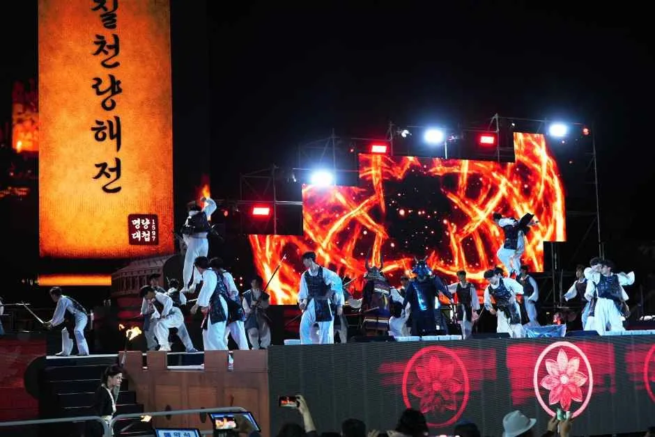
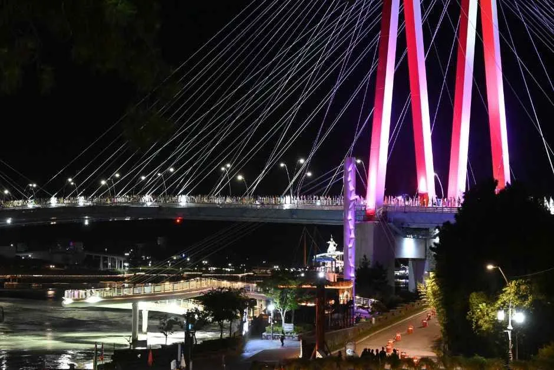
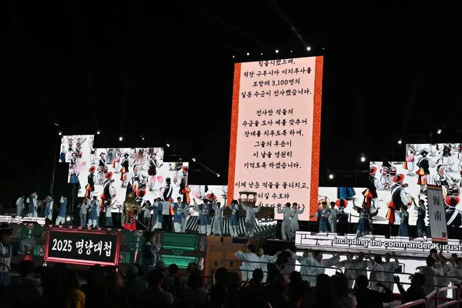
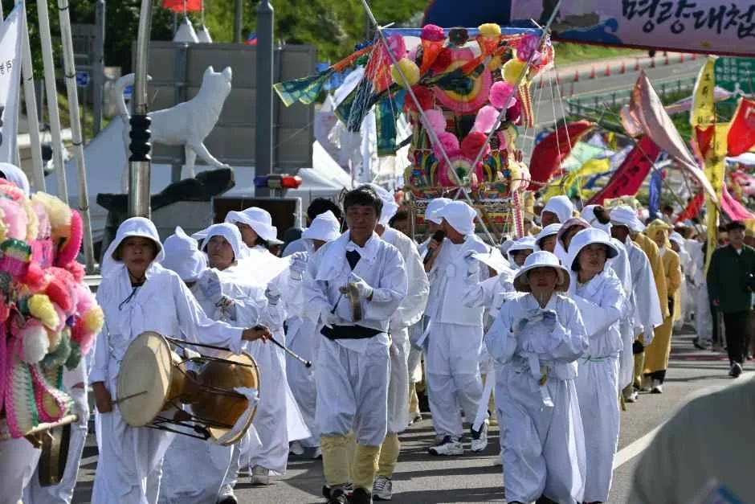
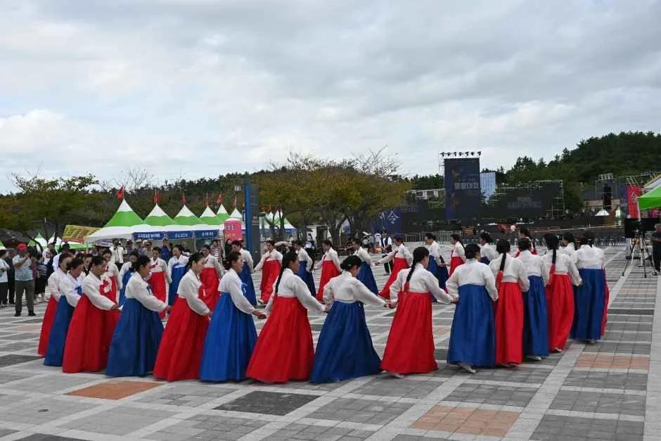
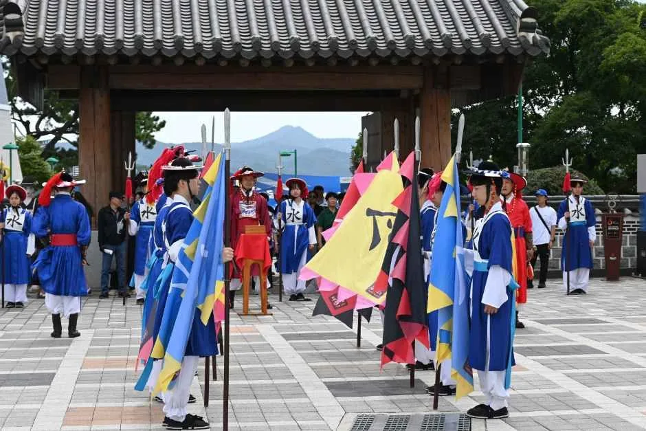
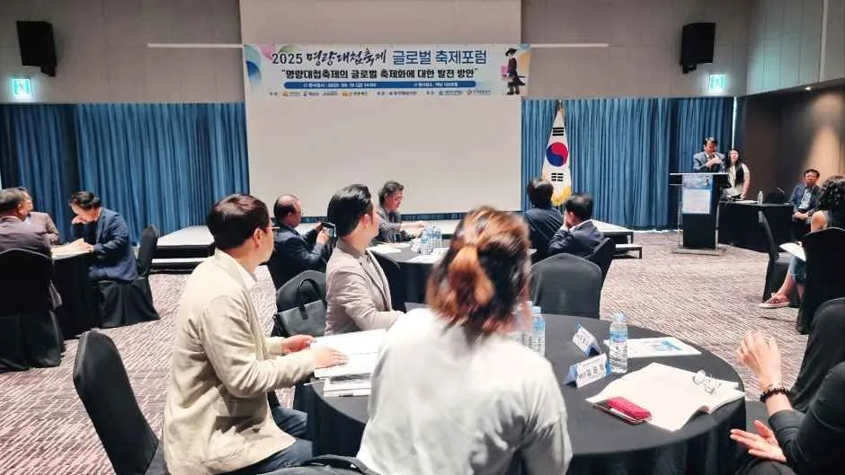
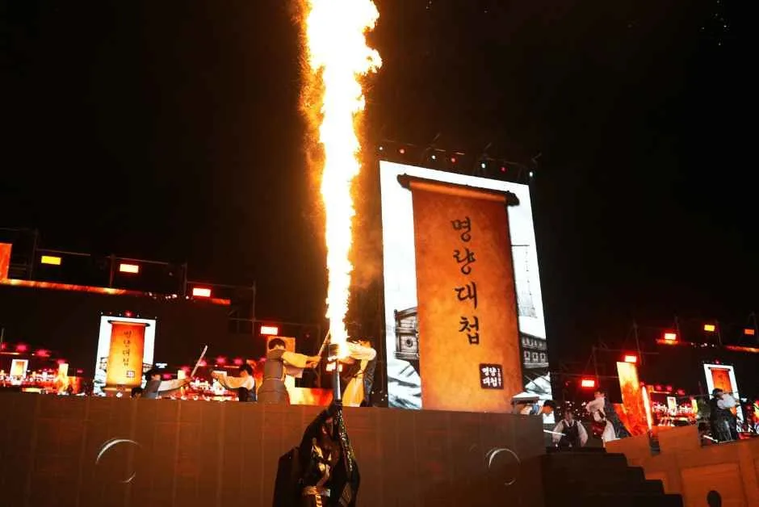

▲ 울돌목 주무대에서 펼쳐지는 명량대첩축제 야간 퍼포먼스. 2026년 축제는 9월 11일부터 13일까지 진도·해남에서 열린다 ⓒ 대한민국 구석구석(한국관광공사)

▲ 야간 조명이 켜진 진도대교. 다리 아래가 바로 명량해전의 무대였던 울돌목이다 ⓒ 대한민국 구석구석(한국관광공사)
1597년 9월 16일(음력), 이순신 장군이 단 13척의 배로 일본 수군 함대 133척을 물리친 명량대첩. 이 승리를 기리는 2026 명량대첩축제가 9월 11일(금)부터 13일(일)까지 사흘간 진도군 녹진관광지와 해남군 우수영관광지, 울돌목 일원에서 열린다. 운영 시간은 매일 오전 11시부터 오후 9시 30분까지이며, 마지막 날인 13일은 오후 6시에 일찍 마무리된다.
1. 13척으로 133척을 이긴 바다 — 명량대첩이란

▲ '명량대첩' 현수막 아래 타오르는 횃불 연출. 축제 주제공연에서 당시의 긴박했던 전투 분위기를 재현한다 ⓒ 대한민국 구석구석(한국관광공사)
명량대첩은 정유재란이 한창이던 1597년, 삼도수군통제사로 재임명된 이순신 장군이 전남 진도와 육지 사이 좁은 해협인 명량(울돌목)에서 일본 수군을 대파한 전투다. 당시 조선 수군은 단 13척, 맞선 일본 함대는 133척에 달해 전력 차이가 10배가 넘었다. 이순신은 "신에게는 아직 12척의 배가 있습니다(상유십이척)"라는 말로 유명한 장계를 올린 뒤, 물살이 빠르고 수심이 얕아 큰 배가 자유롭게 움직이기 어려운 울돌목의 지형을 전술적으로 활용해 승리를 이끌어냈다. 좁은 물목에서는 아무리 대규모 함대라도 한 번에 소수의 배만 진입할 수 있었고, 이순신은 이를 이용해 1대 30이 아닌 1대 3 정도의 국지전으로 전투 구도를 바꿨다는 것이 정설이다.

▲ 임진왜란 발발부터 명량해전 승리까지를 다룬 주제공연의 한 장면. 대형 현수막에 당시 상황을 담은 문구가 함께 표시된다 ⓒ 대한민국 구석구석(한국관광공사)
2. 개막일(9/11) — 1,200명이 진도대교를 건넌다

▲ 오색 깃발을 앞세운 출정퍼레이드 행렬. 해남에서 출발해 진도대교를 건너 진도 주무대까지 이어진다 ⓒ 대한민국 구석구석(한국관광공사)
축제 첫날인 9월 11일 개막식은 진도 녹진관광지 주무대에서 열린다. 가장 눈에 띄는 순서는 약 1,200명이 참여하는 출정퍼레이드로, 해남에서 출발해 울돌목 위 진도대교를 건너 진도 주무대까지 이어지는 대규모 행렬이다. 이어 오후 7시 30분에는 임진왜란 발발부터 명량해전 승리까지의 과정을 4막으로 구성한 융복합 실감형 주제공연이 펼쳐진다. 첫날 저녁 시간대에 방문한다면 이 두 프로그램을 놓치지 않는 것이 관건이다.
| 날짜 | 주요 내용 |
|---|---|
| 9/11(금) | 진도 녹진관광지 개막식, 1,200명 출정퍼레이드(해남→진도대교→진도), 4막 실감형 주제공연(19:30) |
| 9/12(토) | 주제공연(19:30), 김장훈·송가인·에녹 축하공연, 심용환 역사 토크&쇼, 청소년 K-pop 경연 |
| 9/13(일) | 명랑 트롯한마당, 진도 평화의 만가 행렬, 폐막(18:00 조기 종료) |
3. 주말(9/12~13) — 축하공연과 역사 토크쇼
둘째 날인 9월 12일에도 오후 7시 30분 주제공연이 이어지며, 가수 김장훈·송가인·에녹 등이 출연하는 축하공연과 함께 역사강사 심용환의 역사 토크&쇼, 청소년 K-pop 경연이 함께 열린다. 마지막 날인 13일은 명랑 트롯한마당과 진도 평화의 만가 행렬로 사흘간의 일정을 마무리하며, 이날은 오후 6시에 조기 종료되므로 일정을 짤 때 유의해야 한다.

▲ 흰 상복 차림의 전통 행렬이 장식된 상여를 메고 이동하는 모습. 축제 마지막 날 진행되는 '진도 평화의 만가 행렬' 프로그램과 맞닿은 진도 지역 전통 상례 문화다 ⓒ 대한민국 구석구석(한국관광공사)

▲ 원을 그리며 도는 강강술래 공연. 우수영 강강술래는 축제 기간 내내 만날 수 있는 대표 상설 프로그램이다 ⓒ 대한민국 구석구석(한국관광공사)
📍 진도·해남 상설 공연도 놓치지 말 것
축제 기간 내내 우수영 강강술래, 수문장 교대식, 청소년 국악향연, 명량의 군무, 진도아리랑공연, 울돌목 국악향연, 통제영무예단, 진도 씻김굿 등 지역 전통 공연도 함께 운영된다. 대형 주제공연 시간이 맞지 않는다면 이런 상설 공연 위주로 관람 코스를 짜는 것도 방법이다.
4. 셔틀버스 2개 노선 — 주차는 지정 주차장에서

▲ 축제장 입구에서 도열한 전통 의장대. 개막식 전후로 곳곳에서 볼 수 있는 장면이다 ⓒ 대한민국 구석구석(한국관광공사)
축제 측이 안내하는 교통 수단은 셔틀버스 2개 노선이다. 제1노선은 해남읍 서림공원과 축제장을 오가며, 제2노선은 각 지정 주차장과 축제장 사이를 수시로 운행한다. 다만 세부 시간표와 정확한 주차장 위치는 공식 홈페이지의 리플렛과 안내도를 통해 확인하는 것이 가장 정확하다. 진도·해남 두 지역에 걸쳐 행사장이 나뉘어 있는 만큼, 방문 전 어느 쪽 관광지(녹진관광지 또는 우수영관광지)를 먼저 둘러볼지 동선을 미리 정해두는 편이 헷갈리지 않는다.
명량대첩축제 공식 홈페이지에서 확인 가능5. 방문 전 체크할 것들

▲ 축제 준비 상황을 점검하는 관계자 회의 모습. 매년 프로그램 세부 사항은 개막 직전까지 조정되는 경우가 많다 ⓒ 대한민국 구석구석(한국관광공사)
야간 주제공연과 불꽃 연출이 포함된 프로그램이 많은 만큼, 저녁 시간대 방문객이 집중되는 경향이 있다. 개막일인 9월 11일 저녁과 축하공연이 몰린 12일 저녁은 특히 혼잡할 가능성이 높으므로, 출정퍼레이드나 주제공연을 볼 계획이라면 시작 최소 30분 전 도착을 권한다. 진도와 해남 두 지역에 걸쳐 행사장이 나뉘어 있어 이동 시간도 여유 있게 잡아야 하며, 정확한 시간표와 공연 순서는 방문 직전 공식 채널에서 다시 확인하는 것이 안전하다.

▲ 야간 주제공연 중 치솟는 불기둥 퍼포먼스. '명량대첩' 현수막을 배경으로 한 이 장면이 축제의 대표 포토 스폿으로 꼽힌다 ⓒ 대한민국 구석구석(한국관광공사)
✅ 명량대첩축제, 이것만은 확인하세요
· 축제 기간 9월 11일~13일, 장소는 진도 녹진관광지·해남 우수영관광지 울돌목 일원
· 운영 시간 11:00~21:30 (13일은 18:00 조기 종료)
· 개막일 1,200명 출정퍼레이드와 4막 실감형 주제공연이 핵심 볼거리
· 셔틀버스는 해남읍 서림공원 노선과 지정 주차장 노선 2개로 운영
· 우수영 강강술래 등 지역 상설 공연도 함께 관람 가능
6. 정리
명량대첩축제는 13척의 배로 133척을 물리친 이순신 장군의 승리를 진도와 해남 두 지역이 함께 기리는 역사 재현 축제다. 개막일의 대규모 출정퍼레이드와 실감형 주제공연, 주말의 축하공연과 역사 토크쇼까지 사흘간 프로그램이 촘촘하다. 두 지역에 걸쳐 행사장이 나뉘어 있는 만큼 셔틀버스 노선과 동선을 미리 확인하고, 저녁 시간대 혼잡에 대비해 여유 있게 도착하는 것이 좋다.